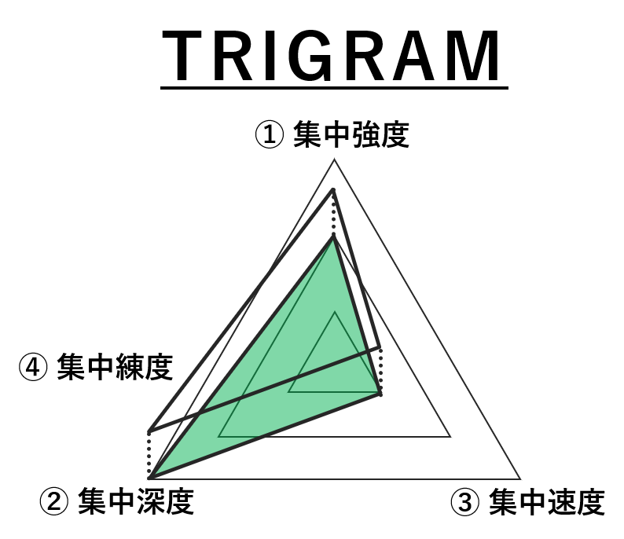
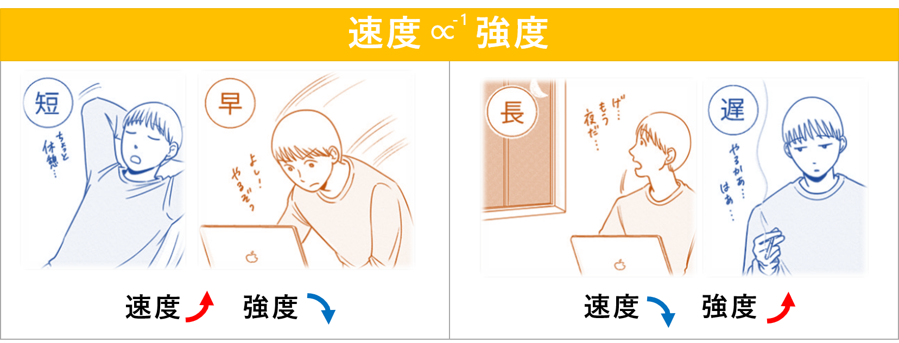
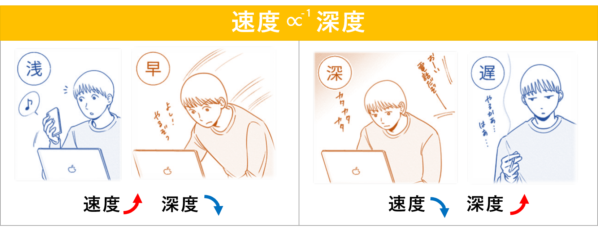
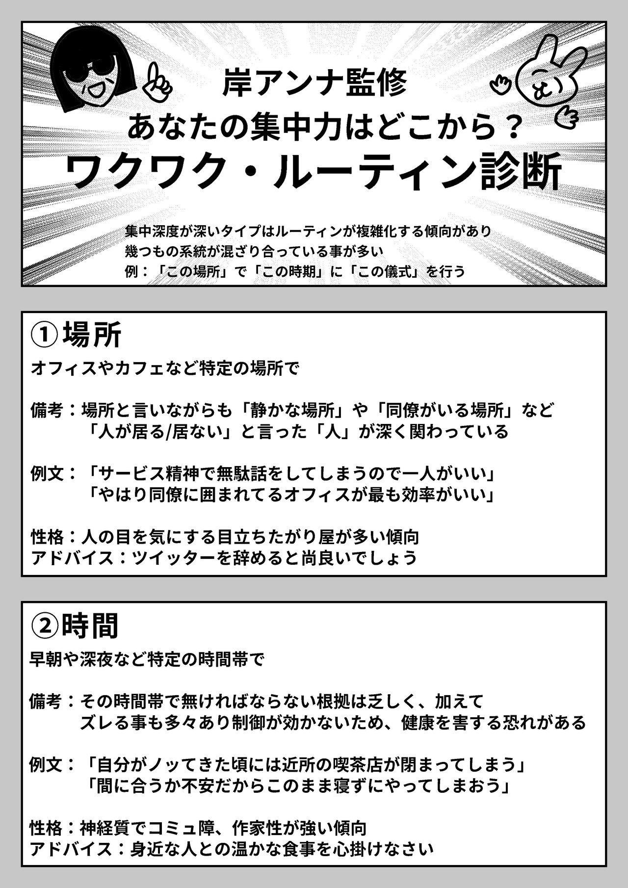
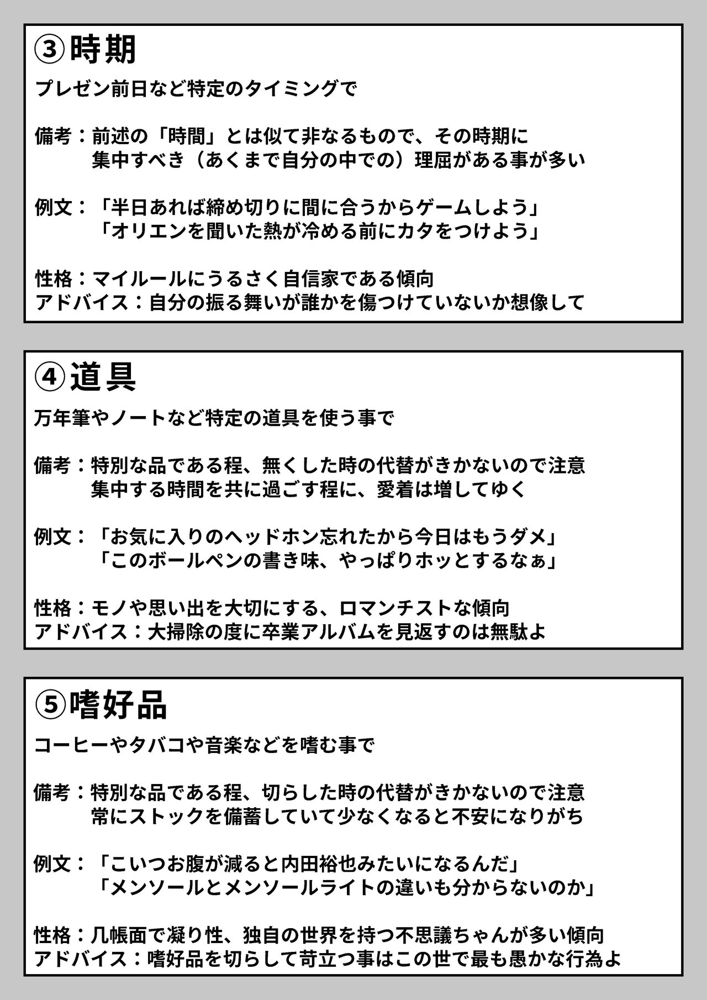
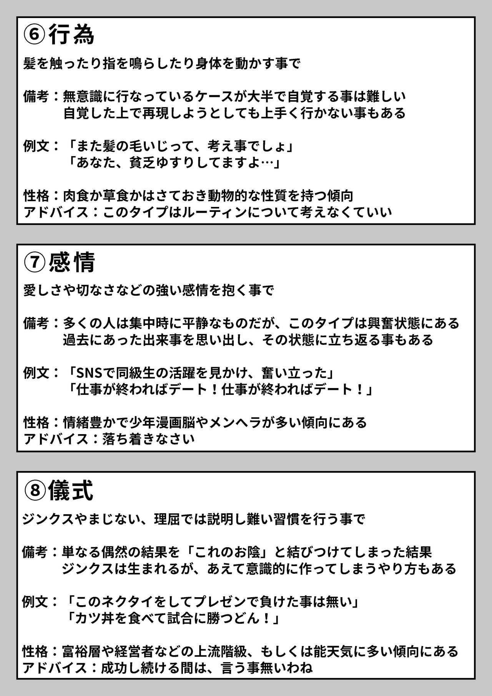
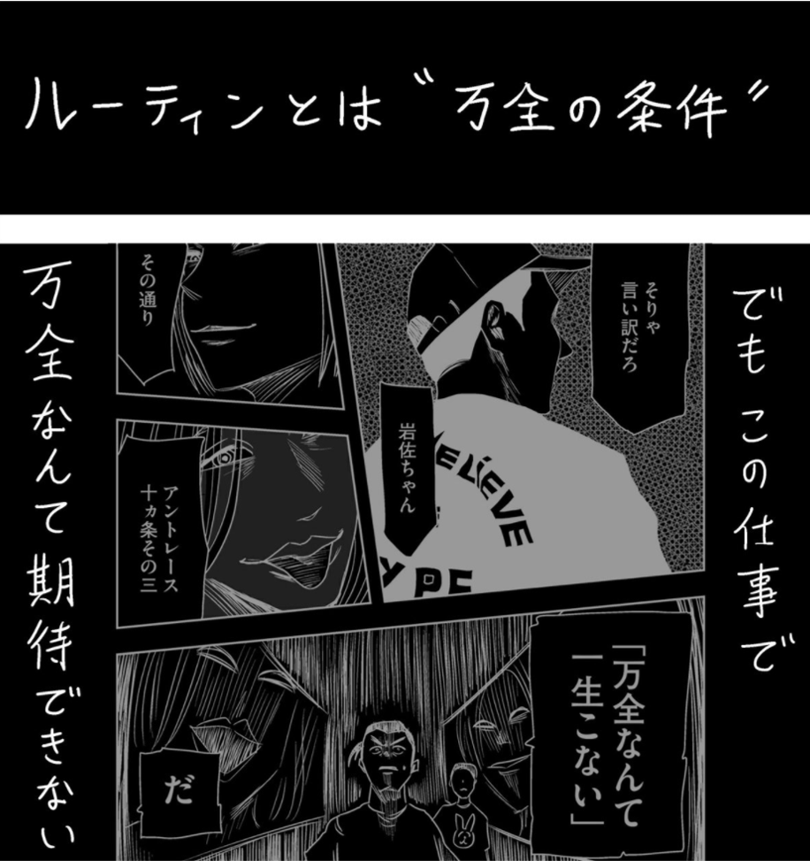

集中力の質
物理法則
ルーティン
ルーティンとはお決まりの所作、集中力の質を限りなく万全に近づける"スイッチ"である。ルーティンと呼ばれる技術には５段階のステージが存在する。必殺技の類でなく、段階が上がるについれて効果効能を必要としなくなる。つまり、集中状態に入るための制限が減っていく。ルーティン外し
出典
- 左利きのエレン 第31話「才能ってもんの正体を知っているか？」
|
集中力とは４つの要素の掛け合わせたものである。 ①集中強度 ... 集中力の継続可能時間 ②集中深度 ... 集中力の深度、耐久度 ③集中速度 ... 集中深度が深まる速度 ④集中練度 ... 集中状態の熟練度 集中力の質＝（強度＋深度＋速度）×練度 一般的にこのトライグラムの分布は「短い・深い・遅い」であることが作者のかっぴーさんの調べでわかっている。 |
 |
| 「速度」と「強度」は概ね反比例する。 |  |
| 「速度」と「深度」は概ね反比例する。 |  |
ステージ０ 「未発見期」
ルーティンが誕生する前の段階、もしくはルーティンを用いているが気づいていない段階。
ステージ１ 「発見期」"ルーティン"
多くの人は未成熟であってもほとんどの場合事足りるのでこの段階までである。
ステージ２ 「成長期」"ルーティン飛ばし"
ルーティンの成長段階。成長法は３つある。
1つ目は「条件緩和」。例えば、メジャーなルーティンであるだろう「嗜好品」を例に出すと、スタバのコーヒーで無いと集中できなかった人が、他の店のコーヒーでも再現性がある事に気がつくといった具合だ。「こうでなければならない」と思い込んでいた条件が、実はもっと緩い条件で済む可能性を無視してはいけない。
2つ目は「条件削除」。例えば「朝にバナナを一本食べる」と「牛乳を一杯飲む」と「軽い運動」と…といった複数の条件が本当に全て必要か確かめる。ルーティンは思い込みが大半なので、この全てが揃っていなくとも発揮できるかも知れないのに無理を強いている可能性がある。
3つ目は「条件統合」。「音楽を聴く」「瞑想する」「軽い運動」が条件にあるとして、それを「音楽を聴きながら散歩する」といった具合にまとめてゆく。これは「条件削除」と合わせて考えた方が効率が良いだろう。
始めは条件でガチガチだったルーティンをシンプルにした上で万全な状態と比較して同程度にする努力。それを、何度も繰り返す事で磨いてゆく段階。であるからして、この成長期は全体を通して最も長くなるだろう。
ステージ３ 「成熟期」"スーパー・ダイブ"
ステージ４ 「寂滅期」"ルーティン外し"
|  |  |  |
|  |